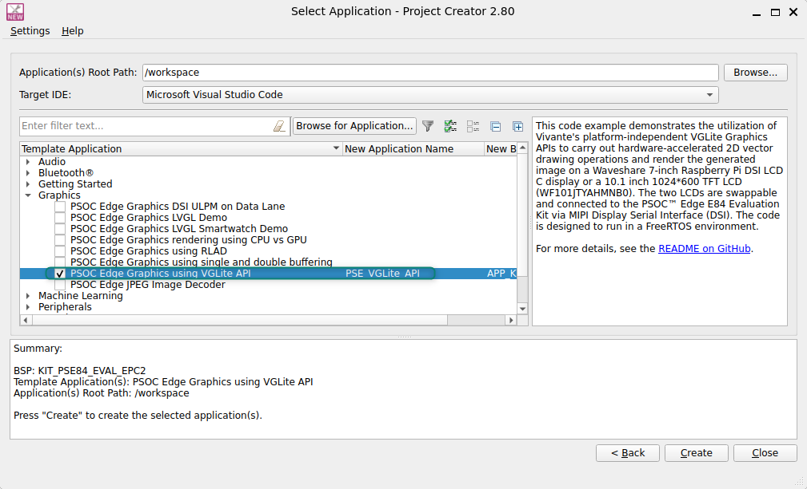

PSOC™ Edge: Build a Customer GUI Prototype with GitHub Copilot¶
Before you begin¶
Use the Infineon PSOC™ Edge LVGL demo as the starting point for a customer-specific touchscreen prototype. You will use GitHub Copilot to understand the application, make focused LVGL changes, and validate the result on the target hardware.
The core path is simple: run the unmodified demo, map the application, customize the content and appearance, add one interaction, and build the prototype. The optional stretch goal at the end asks Copilot to generate a new application layer from a product brief.
In this lab, AI means AI-assisted software development with GitHub Copilot. The core path does not add an on-device machine-learning model or inference engine. Review, build, and test every generated change before using it in the prototype.
Prerequisites¶
Install all required software and hardware listed in the Required development tools section.
Note: This training does not cover the basics of ModusToolbox™ and PSOC™ Edge. Before beginning the training, it is recommended to complete an introductory course or a getting started guide to familiarize yourself with ModusToolbox™ and the PSOC™ Edge architecture.
- For an introduction to PSOC™, including a getting started guide to ModusToolbox™, visit PSOC™ Developer Journey
- For PSOC™ Edge trainings, from beginner tutorials to advanced trainings, visit PSOC™ Edge E84 training collection
- To start a first application for PSOC™ Edge with ModusToolbox™, visit Getting started with PSOC™ Edge E8 MCU on ModusToolbox™ software
Required development tools¶
- ModusToolbox™ software v3.9 or later
- Recommended installation via ModusToolbox™ Setup tool
- Visual Studio Code with the Infineon ModusToolbox™ for VS Code extension v1.10.0 or later
- Install Visual Studio Code, then install the extension from the VS Code Marketplace. The extension can also install the ModusToolbox™ software for you if it is not already present
- Edge Protect Security Suite v2.2.0 or later
- Installed by ModusToolbox™ Setup tool as a dependency to ModusToolbox™
- ModusToolbox™ Programming Tools v1.9.0 or later
- Installed by ModusToolbox™ Setup tool as a dependency to ModusToolbox™
- Board support package (BSP)
- KIT_PSE84_EVAL_EPC2: v1.4.0 or later (available with ModusToolbox™)
- Serial terminal emulator
- Use Tera Term, PuTTY, or a similar terminal emulator
- PSOC™ Edge E84 evaluation kit (KIT_PSE84_EVAL)
- 4.3 inch 800x480 Waveshare display(Supplied with kit)
1. Prepare the starting project¶
Project creation¶
Follow steps in Appendix A: Creating a PSOC™ Edge application in ModusToolbox™ to create a new application When creating the application, select the PSOC™ Edge Graphics using VGLite API application under the Graphics section.
Note: To prevent issues with Windows path length, it’s recommended to rename the project if your workspace path is long.

Confirm that the original music-player screen appears, that the touch controls respond, and that the display is stable. This baseline separates setup issues from issues introduced by your prototype changes.
Keep the platform layer stable
Do not ask Copilot to rewrite display initialization, touch initialization, GPU setup, memory placement, or the LVGL timer loop as part of a normal GUI customization. These areas are hardware- and board-dependent. Customize the application screen first.
2. Map the demo with GitHub Copilot¶
Before asking Copilot to edit code, ask it to explain the existing application using the repository as context. This gives you a map of the code and creates a shared vocabulary for the next requests.
Use a prompt similar to the following:
Inspect this PSOC Edge LVGL demo without editing files. Explain:
Explain where LVGL and the display are initialized, and which file creates the
main music screen.
Explain where user-facing titles and labels are defined, and where colors and
widget styles are assigned.
Explain how image assets are represented and displayed, and which files are
safe for a GUI prototype customization.
Give me the relevant function names and file paths. Treat main.c platform
initialization as protected unless a change is required to launch the screen.
Compare Copilot's answer with the repository. The key application files in the current demo are:
| File | Use in this lab |
|---|---|
proj_cm55/source/main.c |
Starts the graphics task, initializes the display, touch input, and LVGL, then launches the demo. Understand this file; normally do not modify it. |
proj_cm55/source/lv_demo_music.c |
Stores customer-facing content such as titles, artists, genres, and other demo data. |
proj_cm55/source/lv_demo_music_main.c |
Creates the main screen, labels, controls, album art, colors, layout, and interaction callbacks. |
proj_cm55/source/img_*.c |
Contains compiled LVGL image descriptors and pixel data for local images. |
proj_cm55/include/lv_conf.h |
Enables LVGL features, fonts, image support, and demo configuration. |
docs/using_the_code_example.md |
Describes project setup, build, program, and debug workflow. |
If Copilot identifies a different path in the version you cloned, use the actual path in that checkout. Demo implementations can change between revisions.
3. Customize the product content¶
Start with text changes because they are easy to review and demonstrate. Pick a fictional product name or use a customer-approved name. Do not place confidential customer information in a public repository or in a Copilot prompt.
Example prompt:
Update the visible music-demo content for a fictional customer prototype named
Northstar Home Energy. Keep the existing data structures and behavior. Replace
generic titles, artist names, and genres with product-oriented values such as
System status, Energy today, and Connected. Make the smallest source-only
change possible and list every changed file before editing.
Review the proposed changes. For a first prototype, prefer changing the existing title and metadata arrays or accessors in lv_demo_music.c rather than redesigning the data model.
After the edit, inspect the diff:
git diff -- proj_cm55/source/lv_demo_music.c
Build before making the next visual change. If the text is clipped, too small, or not visible, ask Copilot to trace the label creation function and verify the label width, font, alignment, and parent container in lv_demo_music_main.c.
4. Customize colors, layout, and status information¶
Use the existing screen structure as the starting point. In lv_demo_music_main.c, look for functions such as:
create_cont()for main containers and background stylingcreate_title_box()for title, artist, and genre labelscreate_icon_box()for icon imagescreate_ctrl_box()for playback controls and the slidercreate_spectrum_obj()andspectrum_draw_event_cb()for the visualizationalbum_image_create()for the main image area
Use the customer's approved colors sparingly. A prototype is easier to read when the primary background, accent color, text color, and warning/status color have clear roles.
Example prompt:
In lv_demo_music_main.c, update the existing screen styling for a Northstar
Home Energy prototype. Use a near-black background, a cyan accent, white main
text, and amber status text. Preserve the current object hierarchy, touch
events, animation, and screen dimensions. Make only the color and related
style changes needed for the prototype. Show the relevant functions and
explain any contrast or readability risks.
Then ask Copilot to add one small piece of customer-facing status information:
Add a small status label to the existing title area that reads "System ready".
Use the existing LVGL label and layout patterns in this file. Do not create a
new task, change display initialization, or change the LVGL timer loop. Keep
the label within the existing screen bounds and identify where its text and
style are set.
Check the result on the real display. Desktop source review cannot reveal all issues caused by display scaling, font size, touch targets, or contrast.
5. Add a customer logo¶
Use only a logo that the customer has approved for the prototype. For an early conversation, use a clearly labeled placeholder such as customer_logo.png. Do not commit confidential brand assets to a public repository without the customer's permission.
The demo uses local C image files such as img_*.c to provide image descriptors and pixel data to LVGL. The exact conversion command depends on the LVGL image format and color depth configured by the demo. Inspect the existing image files and lv_conf.h before converting a new asset.
Ask Copilot to inspect the established pattern first:
Inspect the local img_*.c image assets and the image creation code in
lv_demo_music_main.c. Do not edit files. Explain the image descriptor type,
color format, naming convention, and how an image is passed to an LVGL image
object. Also identify the lv_conf.h settings that affect image support.
Convert or generate the logo using the same format and naming convention as the existing application assets. You can use the LVGL Image Converter to convert the customer logo to an LVGL-compatible image format. Select LVGL v9 in the converter. Because the demo sets LV_COLOR_DEPTH 16, select RGB565 for an opaque logo or image. If the logo requires transparency, use an alpha-capable LVGL 9 format such as ARGB8888 with premultiplied alpha, matching the existing asset descriptor; do not use plain RGB565, because it cannot preserve transparency. Keep the source image dimensions reasonable for the target display. A small logo placed in a header is usually more useful in a customer prototype than a full-screen bitmap.
After the asset is available, ask Copilot for a focused integration:
Add the local customer logo image to the existing header or title area in
lv_demo_music_main.c. Follow the existing img_*.c LVGL image descriptor pattern
and use the existing object creation and alignment style. Do not change display
initialization, touch initialization, the LVGL timer loop, or unrelated music
controls. Keep the logo inside the screen bounds and explain which asset and
source files are required.
Verify all of the following on hardware:
- The logo is visible at the expected size.
- The logo has enough contrast against its background.
- The logo does not cover labels, controls, or touch targets.
- The image does not cause a build-time section or memory error.
- The logo remains visible after navigating through the existing interface.
6. Add one customer-specific interaction¶
A small interaction makes a prototype feel real. Examples include changing a status label when a control is pressed, toggling a connection indicator, or showing a customer-specific mode name. Start by finding the existing event callback rather than creating a new FreeRTOS task.
Example prompt:
Find the existing callback for the primary control in
lv_demo_music_main.c. Add a small prototype behavior: when the control is
pressed, update the customer status label between "System ready" and
"Monitoring". Reuse the existing callback and LVGL object ownership patterns.
Do not change task creation, display setup, input setup, or timing code. Check
that the label pointer is available where the callback runs and explain the
change before applying it.
If the callback is shared by several objects, ask Copilot to identify the event target and preserve the existing behavior. Do not remove playback, navigation, or touch behavior only to make the prototype look simpler.
7. Build and program the prototype¶
Run the project's documented build flow after each meaningful group of edits:
make build
make program
If the repository uses a selected configuration or a different shell command, follow docs/using_the_code_example.md and the generated project files. Keep the known-good baseline commit available so you can return to it quickly:
git status
git diff --stat
git diff --check
Use Copilot to interpret compiler errors, but give it the complete error output and the changed file. For example:
Review this compiler error and the diff in lv_demo_music_main.c. Identify the
smallest correction that preserves the existing LVGL API and object ownership.
Do not rewrite unrelated code or change board initialization. Explain whether
the error is caused by a missing declaration, an LVGL type mismatch, an image
asset definition, or an object lifetime issue.
Customer prototype acceptance checklist¶
Before showing the prototype, confirm:
- [ ] The original demo built and ran before customization.
- [ ] The customer-facing product name and status text are correct.
- [ ] The color palette is readable on the target display.
- [ ] The approved customer logo or clearly labeled placeholder is visible.
- [ ] The logo and text remain within the display bounds.
- [ ] Touch controls still respond as expected.
- [ ] Existing navigation and animation still work.
- [ ] The prototype builds from a clean checkout or the required asset steps are documented.
- [ ]
git diffcontains only intentional prototype changes. - [ ] No confidential customer data or unapproved assets were committed.
8. Generate a new LVGL application using AI¶
Complete this section only after the core prototype builds and runs. Ask GitHub Copilot to generate a new LVGL application layer from a short product brief, connect it to the existing launch point, and validate it on the target hardware.
Important: In this exercise, “all AI generated” applies to the new application code. Do not allow Copilot to replace display initialization, touch input, GPU setup, memory placement, or the LVGL timer loop. Keep the known-good board and display shell intact.
Choose a product brief¶
Choose one of these examples, or write a similar brief with a clear screen list and a small set of interactions:
| Example application | Suggested screens and interactions |
|---|---|
| Home-energy dashboard | Overview with energy used today, solar generation, battery level, and system status; a details screen; a status indicator that changes when a control is pressed. |
| Connected-appliance panel | Temperature, operating mode, power state, and a bounded mode control with confirmation feedback. |
| Environmental monitor | Temperature, humidity, air-quality status, warning colors, and a simple trend screen using static or simulated values. |
| Device service console | Connection state, firmware version, diagnostics, and a guarded reset confirmation with simulated behavior. |
Limit the application to two or three screens, static or simulated data, existing fonts and image assets, bounded touch targets, and the LVGL APIs already used by the demo. Do not add an RTOS task unless you can explain why the existing application task cannot support the interaction.
Generate the application layer¶
First ask Copilot to identify the existing application launch call and the smallest safe place to redirect it. Use the actual symbol and file path found in the checkout; do not assume that every revision uses the same entry point.
Then adapt this prompt to your selected product brief:
Inspect this PSOC Edge LVGL project before editing files. I want to replace the
demo application with a new application layer for a fictional product named
Northstar Home Energy.
Target and scope:
Display: 800x480.
Screens: Create an overview screen and a details screen.
Content: Show Energy today, Solar, Battery, and System status.
Data: Use static or simulated values only.
Interaction: Add one bounded touch control that changes System status between
"System ready" and "Monitoring".
Reuse the existing LVGL version, fonts, image assets, object styles, and event
callback patterns where practical.
Architecture rules:
Create a focused application module using the repository's existing naming and
include conventions.
Provide one clear application entry function, such as generated_app_create(),
if that matches the codebase style.
Identify the existing demo launch call and change only the smallest
application-layer boundary needed to launch the new app.
Preserve display initialization, touch initialization, GPU setup, memory
placement, task creation, and the LVGL timer loop.
Do not add an RTOS task, change the board configuration, or modify protected
platform files unless the repository proves that a change is required.
Before editing, list the files you intend to change and explain why each file
belongs to the application layer. After editing, explain the object hierarchy,
screen navigation, event ownership, and assumptions to check on hardware.
Review and validate the generated application¶
- Save the product brief and Copilot prompt with the lab evidence. Remove private paths, customer information, and credentials from screenshots.
- Inspect the diff and confirm that the generated files are application-layer files. Reject changes to display initialization, touch setup, GPU setup, memory placement, task creation, or the LVGL timer loop.
- Ask Copilot to review the generated code for missing declarations, unsupported LVGL APIs, object lifetime problems, clipped labels, and touch targets outside the display bounds.
- Build from a clean or documented working state, and then program the board using the project workflow.
- Verify that the new application launches, both screens are reachable, the control changes the status text, and the original display and touch behavior remain stable.
- Capture the generation prompt, reviewed diff, and running board result. These captures show that the stretch goal is an engineering workflow rather than a blind code-generation exercise.
Stretch goal acceptance checks¶
- [ ] The core music-demo prototype remains available as a known-good fallback.
- [ ] The generated application launches through the intended application entry point.
- [ ] Protected platform initialization files and code paths remain unchanged.
- [ ] All labels fit within the 800x480 display bounds.
- [ ] Touch targets respond reliably and do not overlap other controls.
- [ ] Screen navigation and status feedback work on the target hardware.
- [ ] The project builds from a clean or documented checkout.
- [ ] The learner can explain the generated module structure and every intentional diff.
Troubleshooting¶
The demo does not build after adding the logo¶
Compare the new image descriptor with an existing img_*.c file. Check the descriptor name, declaration visibility, pixel format, source inclusion, and the image feature settings in lv_conf.h. Ask Copilot to compare the two assets structurally rather than inventing a new image type.
The logo or label is not visible¶
Check that the object is created, added to the intended parent, aligned inside the display bounds, and not hidden behind another object. Verify the image source is the local descriptor expected by the application. Check foreground and background contrast on the target display.
Touch controls stopped working¶
Review the diff for changes to object event callbacks, object flags, z-order, or touch initialization. Restore the last known-good callback behavior before adding new prototype logic. Do not fix a GUI symptom by changing the board input or display initialization without understanding the platform code.
Text is clipped or overlaps another control¶
Reduce the text length, use an existing smaller font, adjust the label width, or revise the parent layout. Check the result at the target display resolution. A customer prototype should favor readable text and reliable touch targets over fitting every requested label on one screen. Some models can analyze screen images, so a photo of the display can help explain a visual problem.
Next steps¶
After the customer approves the prototype direction, move the design into a maintainable application structure. At that point, evaluate screen navigation, data models, error handling, asset licensing, memory use, performance, and production validation. GPU and frame-rate optimization are follow-up topics; they are intentionally outside this quick-prototype lab.
References¶
Revision history¶
| Date | Version | Description |
|---|---|---|
| 09/22/2026 | *A | Initial code-first LVGL customer prototype lab. |
| 10/06/2026 | *B | Added the AI-generated LVGL application stretch goal and aligned the AI-lab site identity. |
Disclaimer¶
This lab is intended for evaluation and demonstration. Validate all hardware, software, branding, performance, security, and safety requirements before using the prototype in a customer product.